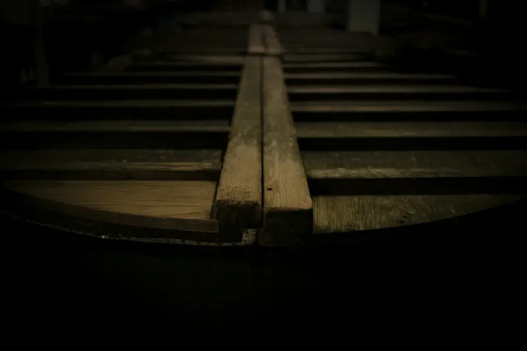

銘柄・蔵見学
銘柄と蔵見学のご案内
定番の三銘柄と季節の限定酒、蔵見学の流れをまとめました。価格はすべて税込で、見本のための架空の金額です。

20歳未満の飲酒は法律で禁止されています。当蔵では、20歳未満の方への酒類の販売はいたしません。
銘柄一覧
すべての銘柄と価格
味の傾向は、蔵人が利き酒をして決めた目安です。同じ銘柄でも、年や貯蔵の期間で少しずつ変わります。
| 銘柄 | 精米歩合 | 味の傾向 | 720ml | 1.8L |
|---|---|---|---|---|
| 瑠璃雫純米大吟醸 | 40% | やや甘口・淡麗 | 3,300円 | 6,380円 |
| 杉の音純米吟醸 | 55% | やや辛口・中間 | 1,980円 | 3,630円 |
| 穂垣特別純米 | 60% | 辛口・濃醇 | 1,540円 | 2,860円 |
| 蔵の朝純米 | 70% | 中口・濃醇 | 1,210円 | 2,310円 |
| 銘柄 | 出荷の時期 | 特徴 | 720ml |
|---|---|---|---|
| しぼりたて生原酒蔵限定 | 1月〜2月 | 搾ったその週に瓶詰め。微発泡で、若い米の香り。 | 1,760円 |
| 杉の音 夏吟 | 6月〜8月 | 低めのアルコール度数で、よく冷やして軽やかに。 | 1,870円 |
| ひやおろし 穂垣 | 9月〜11月 | ひと夏寝かせて角のとれた、秋の味。 | 1,650円 |
酒粕（500g 330円・架空）は1月〜4月に売店でお分けしています。
蔵見学
蔵見学の流れ
土曜・日曜の 10:30 と 14:00 の一日二回。おひとり1,000円（架空・利き酒とおみやげの小瓶つき）です。
- 0分
受付・お話
売店横の受付で名前をお伝えください。蔵の歴史と、その年の米の出来をお話しします。
- 10分
洗米場・麹室の前
米を洗い、蒸し、麹をつくる場所を見ていただきます。麹室の中は衛生のため、窓越しのご案内です。
- 25分
仕込み蔵
タンクの上から醪（もろみ）の様子をのぞけます。冬は発酵の音と香りを感じていただけます。
- 40分
搾りと瓶詰め
昔ながらの槽（ふね）搾りの道具と、瓶詰めの作業場をご案内します。
- 50分
利き酒・売店
三種類を少しずつ。お車の方・20歳未満の方には仕込み水とあま酒をご用意します。
ご予約と注意事項
- 3日前までに、お電話かお問い合わせフォームでご予約ください。
- 1回の定員は10名です。11名以上の団体は平日に別枠でご相談ください。
- 運転される方には利き酒をお出しできません。受付でお申し出ください。
- 酵母への影響を避けるため、当日の朝に納豆を召し上がった方は見学をご遠慮いただいています。
- 蔵の中は段差と急な階段があります。歩きやすい靴でお越しください。
よくある質問
よくある質問
子ども連れでも見学できますか。
はい、保護者の方とご一緒なら見学いただけます。お子さまには利き酒の代わりにあま酒をお出しします。料金は中学生以下無料です（架空）。
通販はどこまで送れますか。
国内であればどこへでもお送りします。夏場の生酒はクール便（別途330円・架空）でのお届けになります。
贈り物の包装はできますか。
のし紙と、杉の木箱（1本用 550円・架空）をご用意しています。ご注文の際にお申し付けください。
開けたお酒はどのくらいもちますか。
冷蔵庫で立てて保存し、1〜2週間を目安にお召し上がりください。味の変化を楽しまれる方もいらっしゃいます。